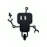

PollinationsГенерация изображений
«Pollinations» подготавливает трёхмерные объекты.
Раздел «Для художников»: варианты ИИ для этой задачи, описания возможностей и переходы к обзорам. Сравните несколько решений на одинаковом примере.
Разработайте визуальный набросок пейзажа перед собственной художественной работой. Опишите главный мотив и соотношение крупных пятен; используйте результат для обсуждения композиции, проверяя, помогает ли выбранный свет направлять внимание к основному объекту.
Нарисуй композиционный набросок старого причала в тумане: одна лодка на переднем плане, дальний берег едва виден. Ограниченная серо-синяя палитра, крупные световые пятна, без мелкой декоративной детализации.

«Pollinations» подготавливает трёхмерные объекты.
«SDXL Auto FaceSwap» меняет лицо в визуальном материале.

SeaArt AI помогает создавать рисунки с использованием разных ИИ-моделей. Продукт предоставляет библиотеку моделей и рекомендации, дополняющие подготовку изображения. Взаимодействие с сообществом также входит в описанные возможности, связывая визуальную работу автора с просмотром и обсуждением художественных материалов.
ThinkDiffusion предоставляет браузерный доступ к среде работы с ИИ-моделями. В наборе возможностей представлен ControlNet, а для дополнительных задач можно запускать виртуальные машины. Такое окружение позволяет работать с моделями через браузер и использовать несколько запущенных сред параллельно в рамках своих задач.
«UnrealPerson» готовит визуальные материалы по заданию.

Adobe Firefly объединяет генерацию и редактирование изображений, видео и других творческих материалов. Подходит для поиска визуального направления и дальнейшей доработки в редакторе.
Сравнивать «AI HD Anime» с другими инструментами раздела «Аниме» удобнее на одинаковом исходном материале.
«AI Picasso» готовит визуальные материалы по заданию.
Сравнивать «AIDrawing» с другими инструментами раздела «Изображения» удобнее на одинаковом исходном материале.

ArtGeneration.me используют для задачи: получать изображения из словесного задания. Ещё одно направление работы: собирать видео с цифровым ведущим.
«ClarityAI (clarityai.cc)» увеличивает изображения для дальнейшей обработки.
«Dazzle AI» готовит визуальные материалы по заданию.
«Dream AI (dream.ai)» готовит визуальные материалы по заданию.
«Flux Pro AI» готовит визуальные материалы по заданию.
«Fooocus» готовит визуальные материалы по заданию.
«Fusion Brain» готовит визуальные материалы по заданию.
Glyf преобразует простые трёхмерные проекты в художественные 3D-изображения с участием ИИ. Продукт ориентирован на визуальную доработку уже намеченного дизайна. Среди направлений указаны материалы для портфолио и мобильных устройств, связывающие подготовку объёмного образа с его дальнейшим представлением в собственном наборе творческих работ.
«Kiri.art» готовит визуальные материалы по заданию.
LaPrompt объединяет галерею и площадку с промтами для генерации изображений и видео. Пользователь может искать пример задания для выбранного визуального направления. Перед повторным использованием выясните поддерживаемую модель и необходимые настройки, а затем замените детали сцены; чужой результат не доказывает, что тот же запрос воспроизводится в вашей конфигурации.
LlamaGen AI помогает создавать аниме, комиксы и материалы для игр с использованием генеративного ИИ. Отдельное направление включает работа с комиксами и согласованность персонажей между изображениями. Инструмент объединяет визуальную часть повествования с разработкой истории, когда рисунки должны относиться к одним героям.
«MageSpace» представлен в разделе «Генерация изображений». При выборе проверьте нужную операцию и условия работы с результатом.
«Masterpiece X» подготавливает трёхмерные объекты. «Masterpiece X» также подготавливает текстуры для визуальных объектов.
Minecraft Skin Generator создаёт игровой скин из текстового задания на русском языке. Пользователь описывает образ и получает файл PNG для Minecraft. В интерфейсе предусмотрен объёмный предпросмотр, позволяющий рассмотреть внешность созданного персонажа перед дальнейшим использованием полученного изображения в игре.
«Neuralblender» готовит визуальные материалы по заданию.
Сравнивать «Petalica Paint» с другими инструментами раздела «Редактировать изображение» удобнее на одинаковом исходном материале.

Pika объединяет инструменты генерации и обработки видео, изображений и звука. Для короткой сцены важно определить действие, сохраняемые детали и способ последующего монтажа.
Для «Polyhive» сначала определите свою задачу и требуемый результат. Карточка относится к направлению «Разработка».
«Simply Draw» представлен в разделе «Образование». При выборе проверьте нужную операцию и условия работы с результатом.
«smudge AI» помогает исправлять и оформлять фотографии.
«TattooJenney» представлен в разделе «Генерация изображений». При выборе проверьте нужную операцию и условия работы с результатом.

Сравнивать «Tattoos AI (tattoosai.com)» с другими инструментами раздела «Генерация изображений» удобнее на одинаковом исходном материале.
«Vose AI» готовит визуальные материалы по заданию.
Страница 5 из 5